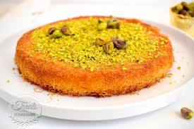
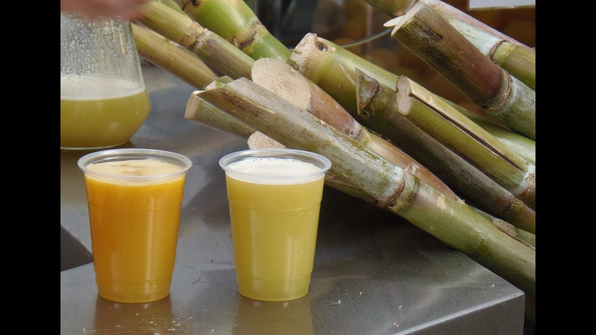

Postres y Bebidas Egipcias

Basalma
El Basalma es un delicioso postre hecho con sémola, jarabe de azúcar y agua de rosa. Es un dulce muy popular en Egipto.

Kunafa
La Kunafa es un postre tradicional hecho con hilos finos de pasta, relleno con queso y empapado en jarabe de azúcar. Es muy sabroso y se sirve en celebraciones especiales.

Jugo de Caña de Azúcar
El jugo de caña de azúcar es una bebida muy popular en Egipto, especialmente en los días calurosos. Es fresco, dulce y muy refrescante.